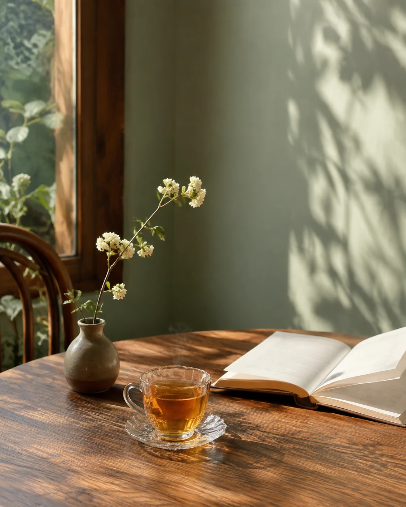

SEOUL, BOTTLED.
USÉLESS
여행이 끝난 뒤에도 서울을 기억하고 싶을 때. 함께 걸었던 장면을 선물하고, 집과 카페의 분위기를 가꾸고 싶을 때.
서울의 장면을 담는 향 ↗
STORIES / USÉLESS SEOUL
여행에서 만난 공기, 선물을 고르며 떠오른 얼굴,
귀여워서 책상에 데려온 작은 물건.
향을 갖고 싶은 마음은 그런 순간에서 시작됩니다.
ONE BELIEF · TWO BRANDS
유슬레스서울이 만든 두 향 브랜드. 좋은 향에 곁에 두고 싶은 형태와 이야기를 더해, 선택하고 선물할 이유를 만듭니다.
SEOUL, BOTTLED.
여행이 끝난 뒤에도 서울을 기억하고 싶을 때. 함께 걸었던 장면을 선물하고, 집과 카페의 분위기를 가꾸고 싶을 때.
서울의 장면을 담는 향 ↗
JUST FOR YOU.
귀여워서 자꾸 눈길이 가는 것. 내 책상에 놓고, 친구에게도 선물하고 싶은 향. 매일 바라보는 자리에 작은 즐거움을 더합니다.
내 곁에 두고 싶은 향 ↗떠올리고 싶은 장소와 시간을 따라 향을 골라보세요.
01
계획은 없었다. 골목을 잘못 들었고, 공장을 고친 카페 창가에 무화과 나무가 있었다. 그날 한 일은 그게 전부. 그래서 좋았다.
A wrong turn, a fig tree, a whole afternoon.
200ml × 2병 세트 · Fig / Plum / Hinoki
02
낯선 도시의 아침 열 시. 체크아웃까지 사십 분, 이불 속에서 버티는 중. 여행에서 제일 기억에 남은 건 결국 이 순간이었다.
Check-out at eleven. Not moving until ten fifty.
500ml × 2병 세트 · Clean / Lavender / Musk

03
아직 붐비기 전의 길. 젖은 잎과 나무 냄새가 하루보다 먼저 올라온다. 산책은 짧았는데 방 안의 공기는 오래 남았다.
A quiet walk before the city wakes.
500ml × 2병 세트 · Green Leaf / Hinoki / Musk
04
호수 가장자리로 걸어가면 유난히 붉은 빛이 남는다. 달콤함보다 조금 더 마른, 체리와 우드 사이의 오후.
Cherry light, dry wood, a long walk around water.
500ml × 2병 세트 · Cherry / Cedarwood / Musk

05
해가 긴 날이었다. 할 일을 미루고 홍차를 우렸다. 김이 올라오는 동안 아무 생각도 하지 않았다. 가장 비생산적인 시간이, 가장 좋은 시간이었다.
The least productive hour. The best one.
500ml × 2병 세트 · Bergamot / Floral Tea / White Musk
다음 향을 상상하며 모아둔 장면들. 출시가 확정된 제품은 아닙니다. TEASER · 판매 제품 아님
첫눈 내린 아침, 세상이 잠깐 조용해진다.
밤을 다 쓰고 돌아가는 길, 창밖으로 흐르던 불빛.
볕이 드는 한옥 마당, 종이와 햇살의 냄새.
네온 아래 금속의 골목, 어른이 된 척하던 밤.
약속도 없이 오른 아침 숲길, 젖은 풀냄새.
아침 솔숲, 맑게 깨어나는 푸른 공기.
처마 끝 곶감처럼, 천천히 익어가던 가을.
잔디밭에 앉아 통째로 써버린 오후.
되돌릴 수 없어서, 잊히지 않는 밤을 위해.
하루가 끝난 뒤에도 남아 있는 도시의 기분.
위 열 가지는 아직 병에 담기지 않은 장면입니다. 어떤 시간부터 담을지, 천천히 고르는 중.
THINGS THAT MATTER
좋은 향은 기본입니다. 여기에 여행의 기억과 선물하는 마음, 귀여운 물건을 매일 바라보는 즐거움을 더합니다. 필수는 아니지만 삶의 온도와 감정을 바꾸는 것들. 유슬레스서울은 그 마음을 향과 오브제로 남깁니다.